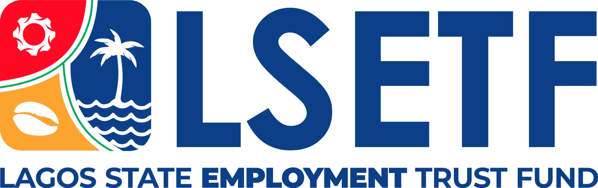

This website is an attempt at putting together and online few personal projects on the following topics:
Projects
Active
- Open Data Application: a data science online portfolio; and
- Global Citizen Notebook: a blogging attempt for sharing content, opinions and ideas for improvement.
Archived
